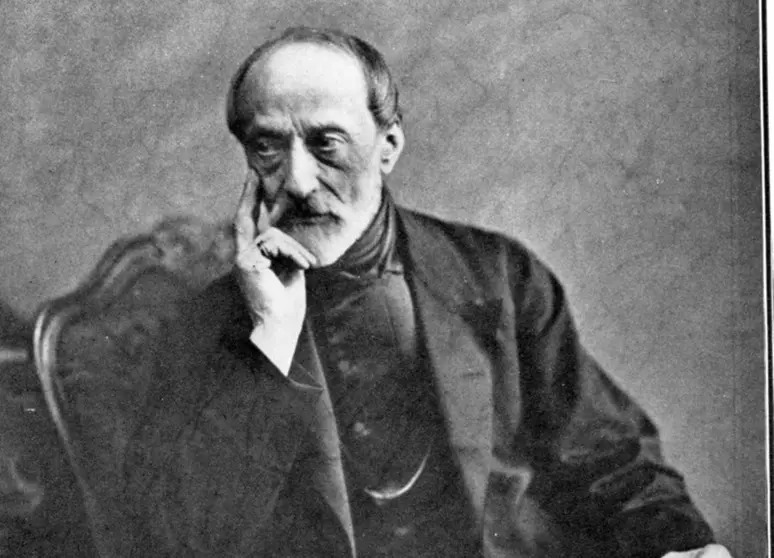
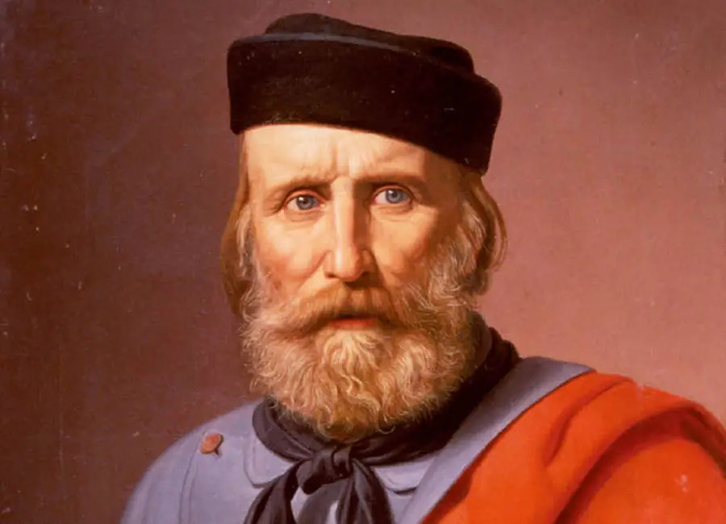
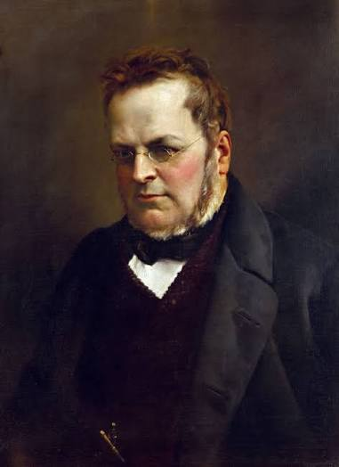
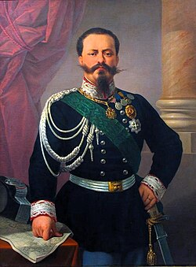
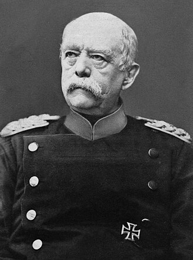
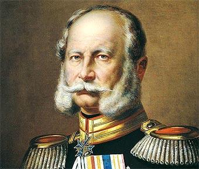

Giuseppe Mazzini
Fue un político italiano que defendió la creación de una Italia unida y republicana. En 1831 fundó la organización Joven Italia para impulsar este proyecto.
Identidades que transformaron el mapa europeo
1800-1871
Comenzar el recorridoEl nacionalismo fue una corriente que tomó a la nación como parte fundamental de la identidad de las personas y de la organización política. Durante el siglo XIX, impulsó movimientos que buscaban unir territorios o conseguir que determinadas comunidades pudieran tener su propio Estado.
La identidad nacional podía construirse a partir de elementos compartidos, como la historia, las tradiciones, la lengua o las aspiraciones políticas. Sin embargo, eso no quería decir que todos los habitantes pensaran igual o estuvieran de acuerdo con una misma forma de gobierno.

Fue un político italiano que defendió la creación de una Italia unida y republicana. En 1831 fundó la organización Joven Italia para impulsar este proyecto.

Fue un dirigente militar que tuvo un papel importante en las campañas que llevaron a la unificación de Italia.

Fue primer ministro de Piamonte-Cerdeña y trabajó para conseguir la unificación italiana bajo una monarquía.

Fue rey de Piamonte-Cerdeña y, tras la unificación, asumió el título de rey de Italia en 1861.

Fue el principal dirigente de Prusia durante la unificación alemana, proceso que impulsó mediante la diplomacia y distintos conflictos militares.

Fue rey de Prusia y en 1871 fue proclamado emperador del Imperio alemán, tras completarse la unificación.
Selecciona un acontecimiento para explorar qué sucedió y dónde ocurrió.
1831
Lugar: Movimiento italiano organizado desde el exilio.
Mazzini fundó la Joven Italia con el objetivo de impulsar la unión de los territorios italianos y establecer una república. Su propuesta defendía la participación de la población y la soberanía popular, ideas que se diferenciaban del modelo monárquico que finalmente adoptó Italia.
18 de mayo de 1848
Lugar: Iglesia de San Pablo, Frankfurt, Confederación Germánica.
Representantes de distintos territorios alemanes se reunieron para debatir la creación de un Estado nacional y la aprobación de una constitución liberal. La Asamblea buscaba convertir las demandas de unidad y derechos políticos en un proyecto común.
Fuentes: [5].
1849
Lugar: Frankfurt y otros territorios alemanes.
Federico Guillermo IV de Prusia rechazó la corona que le ofreció la Asamblea de Frankfurt. La recuperación del poder por parte de las monarquías y la derrota de los movimientos revolucionarios terminaron por dejar atrás este primer intento de unificación alemana.
Fuentes: [5].
1860
Lugar: Sicilia y sur de Italia.
Giuseppe Garibaldi encabezó una expedición militar conocida como la Expedición de los Mil, con la que logró conquistar Sicilia y avanzar por el sur de Italia. Sus victorias facilitaron la incorporación de estos territorios al proceso de unificación.
17 de marzo de 1861
Lugar: Turín, Italia.
El Parlamento proclamó a Víctor Manuel II como rey de Italia, dando origen al nuevo reino. Este resultado fue posible gracias a los esfuerzos políticos y diplomáticos de figuras como Camillo Benso, conde de Cavour, aunque todavía quedaban territorios por incorporar.
1866
Lugar: Véneto, nordeste de la península italiana.
Tras la guerra entre Prusia y Austria, Italia obtuvo el Véneto y lo incorporó a su territorio. Este acontecimiento mostró que la unificación todavía no estaba completa, a pesar de la creación del reino en 1861.
20 de septiembre de 1870
Lugar: Roma, Estados Pontificios.
Las tropas italianas entraron en Roma por la brecha de Porta Pia. Después de un plebiscito, la ciudad y el Lacio fueron incorporados al Reino de Italia. Roma se convirtió en la capital del país en 1871.
18 de enero de 1871
Lugar: Galería de los Espejos, Versalles, Francia.
En medio de la guerra franco-prusiana, Guillermo I fue proclamado emperador alemán. La unificación se concretó bajo el liderazgo de Prusia y Otto von Bismarck, a través de la diplomacia y los conflictos militares, siguiendo un camino distinto al que había propuesto la Asamblea de Frankfurt.
Aunque Mazzini defendía la creación de una república, la unificación italiana terminó realizándose bajo una monarquía encabezada por Víctor Manuel II. Esto demuestra que, aunque varios personajes compartían el objetivo de unir Italia, no todos tenían las mismas ideas sobre cómo debía organizarse el nuevo país.
El primer intento de unificación alemana, impulsado por la Asamblea de Frankfurt, no logró concretarse. Años después, Prusia consiguió liderar el proceso mediante la diplomacia y los conflictos militares. Así, Alemania se convirtió en un Estado nacional sin que esto significara necesariamente la creación de un sistema democrático.